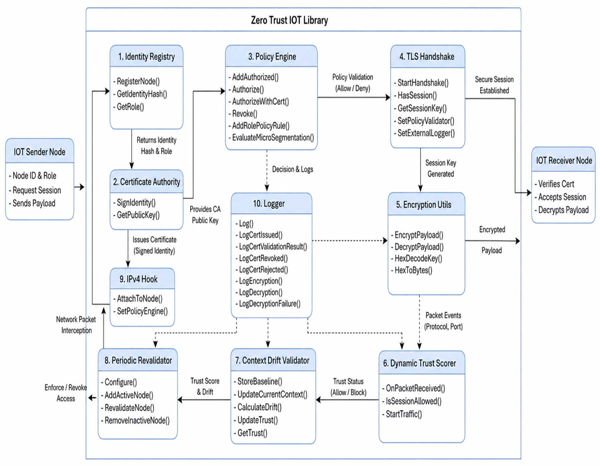

|
Zero Trust IOT Library
This library introduces Zero Trust security principles into NS-3 simulations of IoT and Edge networks.
|
|
Zero Trust IOT Library
This library introduces Zero Trust security principles into NS-3 simulations of IoT and Edge networks.
|
The Zero Trust IoT Security Library is a modular security framework designed for ns-3 simulations.
It implements Zero Trust principles by continuously validating device identities, certificates, trust levels, contextual attributes, and access policies before permitting communication between network entities.
The library integrates identity management, certificate-based authentication, policy-driven authorization, dynamic trust evaluation, context drift validation, encrypted communication, and micro-segmentation mechanisms into a unified security architecture.
Communication requests are continuously verified according to the principle of "Never Trust, Always Verify", ensuring that trust decisions are based on current security posture rather than network location or prior authentication.

The framework performs identity verification, certificate validation, secure session establishment, dynamic trust assessment, context-aware revalidation, and policy enforcement before allowing communication between participating nodes.
The primary goal of this framework is to provide:
The framework consists of:
Communication requests undergo identity verification, authentication, authorization, trust assessment, and enforcement checks before network access decisions are applied.